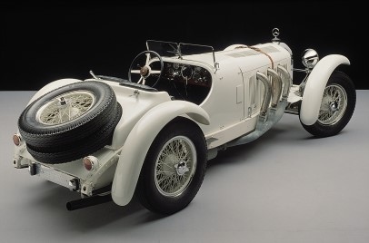
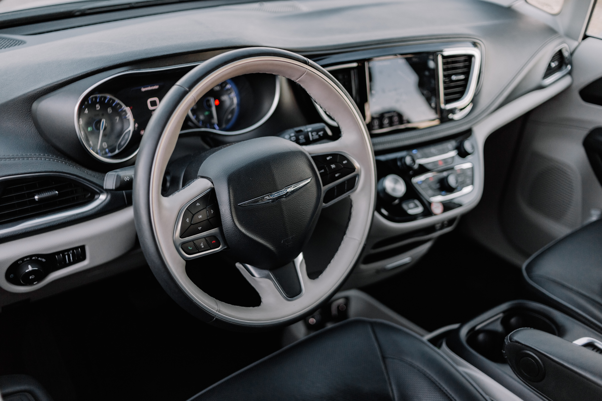

합병 이후 ~ 제2차 세계대전 이전(1926~1938)
- 합병으로 설립된 다임러-벤츠 AG는 1926년 10월에 열린 베를린 모터쇼를 통해 최초의 다임러-벤츠 모델을 선보였다. 이후 생산되는 모든 상품에는 메르세데스-벤츠라는 이름이 붙여졌고 엠블럼(Emblem, 브랜드를 상징하는 심볼)은 1916년부터 다임러가 사용해 온 세 꼭지의 별(Three point star)을 벤츠의 월계관 로고가 둘러싸는 형태로 결정되었다.
- 1928년 메르세데스-벤츠는 고성능 ‘메르세데스-벤츠 SSK(독일어로 Super Sport Kurz를 나타내는 약자로서 영어로는 Super Sport Short라는 뜻임)’를 출시했다. 이 차종은 250마력의 최고출력을 내는 직렬 6기통 7.1리터 슈퍼차저(supercharger) 엔진과 4단 변속기를 장착하고 최고 시속 190km의 성능을 발휘했다. 메르세데스-벤츠는 1929년 고급형 ‘뉘르부르크(Nurburg)’를 출시했다. 모델 뉘르부르크는 13일 동안 2만km를 계속 달리면서 단 한 번도 고장이 나지 않아 뛰어난 내구성을 입증했다.
- 슈퍼차저 스포츠카 '메르세데스-벤츠 SSK'
제2차 세계대전 ~ 크라이슬러 인수(1939~1998)
- 제2차 세계대전 중 다임러-벤츠는 주로 군사장비, 배와 비행기 모터를 생산했다. 당시 공장은 점령지 여기저기 흩어져 있었는데 전쟁으로 인해 부분적으로 파괴되었다. 1946년 종전 이후 자동차 생산이 재개되면서 1947년 다임러-벤츠는 ‘메르세데스-벤츠170V’를 생산했다. 1954년에는 불후의 명작으로 기록되는 ‘메르세데스-벤츠 300SL‘을 출시했다. 경주용 자동차를 기본으로 제작된 메르세데스-벤츠 300SL은 걸윙 도어(Gull-wing Door, 자동차 위쪽으로 열리는 문)와 6기통 2,996cc 215마력 엔진을 탑재했으며, 최고 속도는 250km였다. 메르세데스-벤츠 300SL은 1954년부터 1963년까지 3,258대가 생산되었고, 메르세데스-벤츠 300SL과 뒤이어 나온 ‘메르세데스-벤츠 190SL‘은 현재 메르세데스-벤츠 SL시리즈의 기원이 되었다.
- 1959년에는 1926년에 이어 두 번째로 BMW와의 합병이 추진되었지만, 기업 구조가 너무 상이하고 양 사(社)가 서로를 경쟁자로 생각하여 결국 무산되었다.
- 걸윙 도어를 처음으로 탑재한 스포츠 레이싱 카 '메르세데스-벤츠 300SL'
크라이슬러 인수 이후 ~ 현재(1998~2014)
2002년 다임러-크라이슬러는 고급 호화 리무진 모델의 출시를 위해 ‘마이바흐(Maybach)’라는 이름을 60년 만에 다시 사용했다. 마이바흐는 빌헬름 마이바흐가 아들과 설립한 회사였다. ‘마이바흐 모터 제작 주식회사(Maybach motorenbau GmbH)’는 제2차 세계대전 종전 후 선박용 디젤 모니터를 주로 제작했으며 1960년 다임러-벤츠에 인수되어 1985년에 완전히 다임러-벤츠의 소유가 되었다. 2003년에는 메르세데스-벤츠가 맥라렌(McLaren)과 함께 설계하고 생산한 스포츠카 ‘메르세데스-벤츠 SLR 맥라렌’이 출시되었다.
2007년 크라이슬러 매각 후 사(社)명이 ‘다임러 AG(Daimler AG)로 변경되었다. 2008년부터는 고든 바그너(Gorden Wagener)가 메르세데스-벤츠의 수석 디자이너로 취임하며, 메르세데스-벤츠에 혁신적이고 젊은 감각을 더하고 있다.


 설립자 칼 벤츠(1844~1929)
설립자 칼 벤츠(1844~1929)